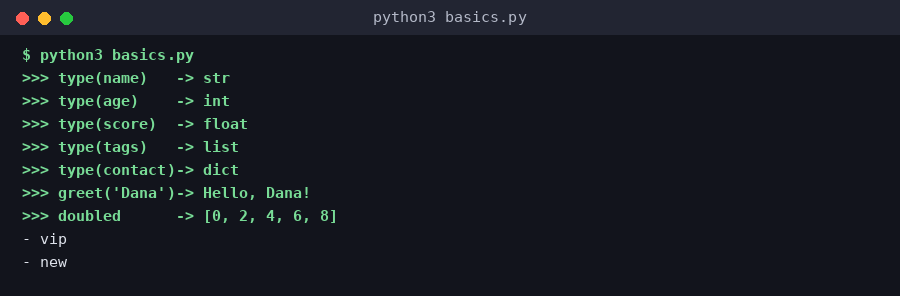
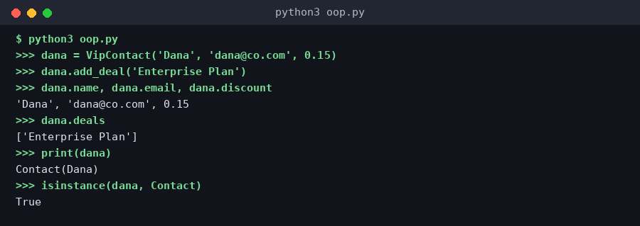
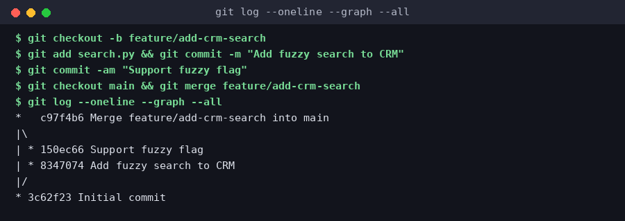
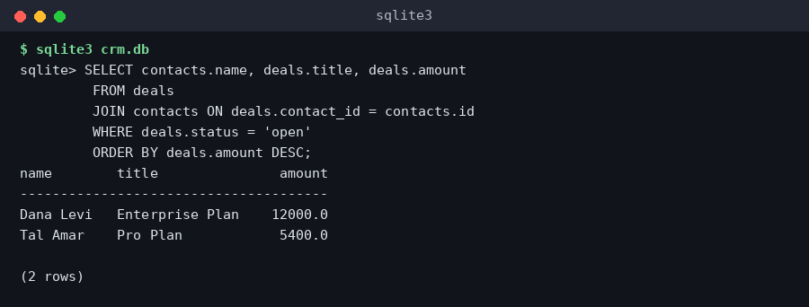
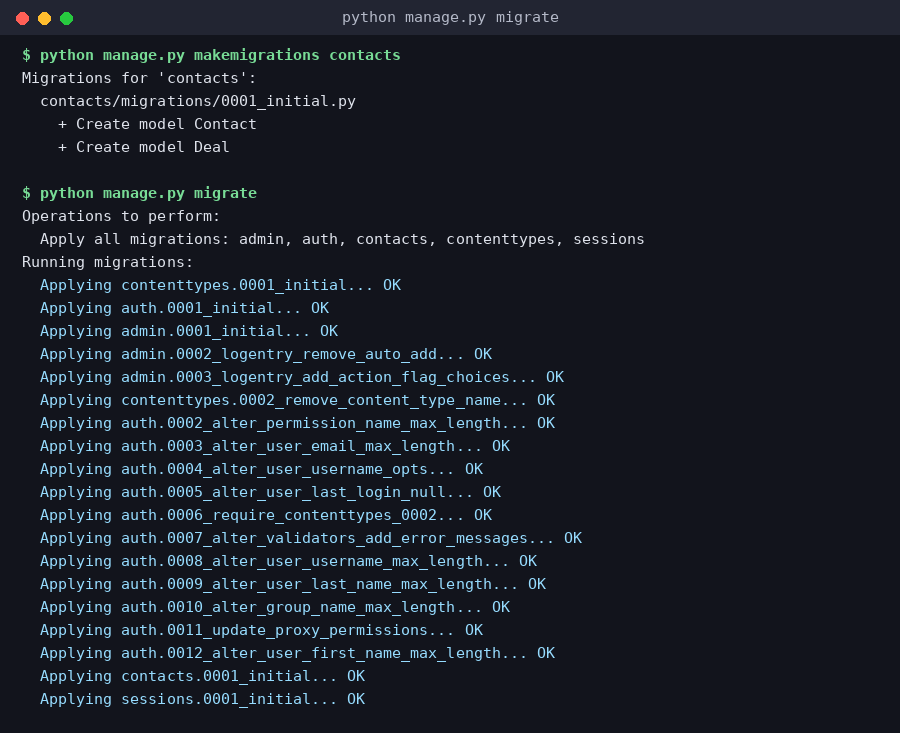
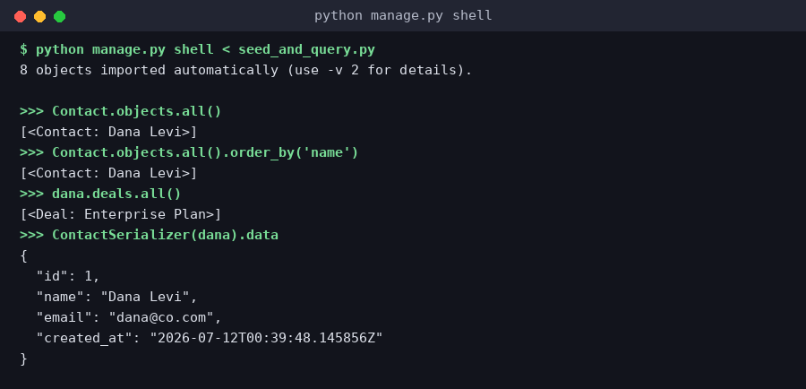
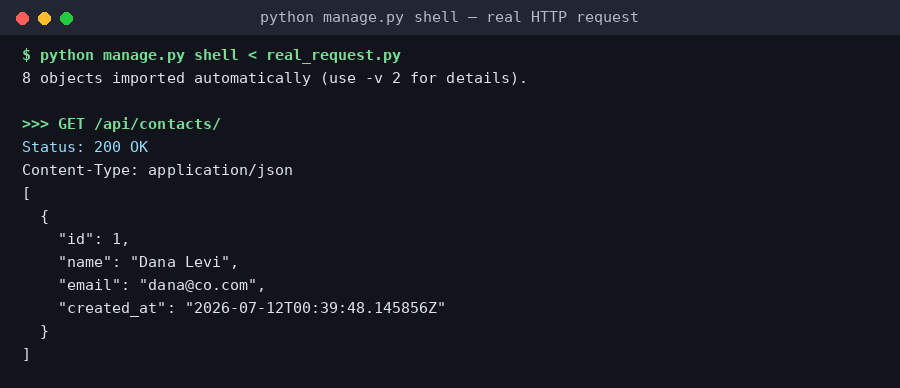

Python היא שפה מוקלדת דינמית (dynamically typed) - לא מצהירים על טיפוס המשתנה מראש, המשתנה מקבל את הטיפוס של הערך שהוקצה לו, ויכול להשתנות. הטיפוסים הבסיסיים: int, float, str, bool, ואוספים כמו list (רשימה ניתנת לשינוי), tuple (רשימה קבועה), dict (מיפוי key-value), ו-set (אוסף ייחודי ללא סדר).
מבני בקרה: if/elif/else, for (איטרציה על אוסף, לא לולאת מונה קלאסית כמו ב-C), ו-while. Python משתמשת בהזחה (indentation) במקום סוגריים מסולסלים כדי לסמן בלוקים - זו לא רק סטייל, זו תחביר מחייב.
פונקציות מוגדרות עם def, יכולות לקבל ארגומנטים עם ברירת מחדל, ולהחזיר ערך עם return. List comprehension היא תחביר תמציתי ואידיומטי ליצירת רשימות: [x*2 for x in range(5)] במקום לולאת for מפורשת.
pip הוא מנהל החבילות של Python, ו-venv (virtual environment) יוצר סביבה מבודדת לפרויקט כדי שחבילות של פרויקט אחד לא יתנגשו עם פרויקט אחר. כלל אצבע: כל פרויקט Python מקבל venv משלו.
name = "Dana" # str
age = 29 # int
score = 91.5 # float
is_active = True # bool
tags = ["vip", "new"] # list - ניתן לשינוי
contact = {"name": name, "age": age} # dict
def greet(name, greeting="Hello"):
return f"{greeting}, {name}!"
doubled = [x * 2 for x in range(5)] # [0, 2, 4, 6, 8]
for tag in tags:
print(f"- {tag}")f"...") - הדרך המודרנית והמומלצת לשלב משתנים בתוך מחרוזת, במקום קונקטנציה עם +.
basics.py שלמעלה ב-Python אמיתי וצילמנו את הפלט המדויק שהתקבל.42, "שלום", [1,2,3], True, {'a':1}) ותראו איזה טיפוס זה:Class הוא תבנית להגדרת סוג נתונים חדש - מגדירה אילו תכונות (attributes) ואילו התנהגויות (methods) יהיו לכל אובייקט מהסוג הזה. Object (instance) הוא מופע קונקרטי שנוצר מהמחלקה - כמו ההבדל בין "תבנית טופס" לבין "טופס מלא ספציפי".
__init__ הוא ה-constructor - רץ אוטומטית כשיוצרים אובייקט חדש, ומקבל self (הפניה לאובייקט עצמו) כפרמטר ראשון תמיד. ירושה (inheritance) מאפשרת למחלקה "לרשת" תכונות והתנהגויות ממחלקת-אב, ולהוסיף או לדרוס (override) חלק מהן.
זה בדיוק המודל שעליו בנוי Django (השיעורים הבאים): כל טבלה במסד הנתונים שלכם תהיה מחלקת Python (Model) שיורשת ממחלקת בסיס של Django ומקבלת אוטומטית התנהגויות שמירה/שליפה/מחיקה.
class Contact:
def __init__(self, name, email):
self.name = name
self.email = email
self.deals = []
def add_deal(self, deal):
self.deals.append(deal)
def __repr__(self):
return f"Contact({self.name})"
class VipContact(Contact): # ירושה
def __init__(self, name, email, discount):
super().__init__(name, email) # קורא ל-constructor של האב
self.discount = discount
dana = VipContact("Dana", "dana@co.com", 0.15)
dana.add_deal("Enterprise Plan")
print(dana) # Contact(Dana) - עדיין נגיש כי VipContact יורש מ-Contactsuper().__init__(...) קורא ל-constructor של מחלקת האב, כדי לא לשכפל קוד. זה דפוס סטנדרטי כמעט בכל שפת OOP.
Git הוא מערכת בקרת גרסאות מבוזרת - לכל מפתח יש עותק מלא של ההיסטוריה, לא רק גישה למסד נתונים מרכזי. היחידה הבסיסית היא commit - תמונת מצב (snapshot) של כל הקבצים בנקודת זמן מסוימת, עם הודעה מסבירה, מזהה ייחודי (hash), והפניה ל-commit הקודם.
Branch הוא פשוט מצביע (pointer) נייד שמצביע על commit מסוים - זה מה שהופך יצירת branch ל"זולה" כל כך ב-Git (בניגוד למערכות ישנות יותר). זרימת עבודה סטנדרטית: יוצרים branch חדש לפיצ'ר (feature/add-crm-search), עובדים ומקמיטים עליו, ואז ממזגים (merge) בחזרה ל-main - לרוב דרך Pull Request שעובר code review לפני המיזוג.
שלושה אזורים חשובים להבין: Working Directory (הקבצים על הדיסק שלכם), Staging Area (git add - "מה ייכנס ל-commit הבא"), ו-Repository (git commit - ההיסטוריה השמורה בפועל).
git checkout -b feature/add-crm-search # branch חדש git add crm/search.py # staging git commit -m "Add fuzzy search to CRM" # commit git push origin feature/add-crm-search # דחיפה לריפו מרוחק # ...פותחים Pull Request, מקבלים review... git checkout main git merge feature/add-crm-search # מיזוג חזרה
git diff מראה שינויים שעדיין לא ב-staging; git log מראה את היסטוריית ה-commits; git status הוא הפקודה שתריצו הכי הרבה - היא תמיד אומרת לכם איפה אתם נמצאים.
git log --oneline --graph --all על התוצאה.מסד נתונים יחסי (כמו PostgreSQL או MySQL) מארגן מידע בטבלאות - שורות (records) ועמודות (fields) עם טיפוסים מוגדרים. כל טבלה מקבלת Primary Key (מזהה ייחודי, בד"כ id), וטבלאות מתקשרות ביניהן דרך Foreign Key - עמודה בטבלה אחת שמצביעה על ה-Primary Key של טבלה אחרת. זו בדיוק הדרך למדל מערכת CRM: טבלת contacts, טבלת deals עם contact_id שמצביע חזרה על איש הקשר.
שאילתות SQL בנויות מפקודות כמו SELECT (שליפה), WHERE (סינון), JOIN (חיבור טבלאות לפי מפתח), GROUP BY (קיבוץ וצבירה), ו-ORDER BY (מיון). Index הוא מבנה נתונים נוסף שמאיץ חיפוש בעמודה מסוימת במחיר של מקום אחסון וזמן כתיבה מעט איטי יותר - שימושי מאוד על עמודות ש-WHERE או JOIN מסננים לפיהן הרבה.
Transactions: קבוצת שינויים שמתבצעת "הכל או כלום" - אם שלב באמצע נכשל, כל מה שקרה בטרנזקציה מתבטל (rollback). זה קריטי כשיוצרים איש קשר ועסקה קשורה יחד: לא רוצים ליצור את איש הקשר בלי העסקה אם משהו נכשל באמצע.
בעיית N+1: מלכודת ביצועים נפוצה מאוד - אם שולפים 100 אנשי קשר ואז, בלולאה, שולפים בנפרד את העסקאות של כל אחד, מקבלים 101 שאילתות במקום שאילתה אחת (או שתיים) עם JOIN. זו בדיוק הסיבה ש-Django ORM מציע פקודות כמו select_related ו-prefetch_related - שיעלו בקורס בהמשך.
SELECT contacts.name, deals.title, deals.amount FROM deals JOIN contacts ON deals.contact_id = contacts.id WHERE deals.status = 'open' ORDER BY deals.amount DESC;

SELECT * FROM contacts ORDER BY id ASC;
Django הוא פריימוורק Python "batteries included" לבניית אתרים - כולל ORM, מערכת ניהול (Admin), אימות משתמשים, וטיפול בטפסים, מוכנים מהקופסה. זה בדיוק מה שהופך אותו לבחירה כל כך פופולרית לבניית מערכות כמו CRM.
Model ב-Django הוא מחלקת Python (בדיוק כמו שראינו בשיעור ה-OOP) שיורשת מ-models.Model. כל attribute במחלקה מוגדר כ-Field (למשל CharField, EmailField, ForeignKey), ו-Django הופך את זה אוטומטית לטבלת SQL תואמת - כולל Primary Key אוטומטי.
Migrations הן הדרך של Django לנהל שינויים בסכמה של מסד הנתונים לאורך זמן: כשמשנים Model, מריצים makemigrations (Django מזהה את השינוי ומייצר קובץ migration) ואז migrate (מריץ בפועל את ה-SQL על מסד הנתונים). זה בדיוק "Git להיסטוריית הסכמה" של מסד הנתונים.
from django.db import models
class Contact(models.Model):
name = models.CharField(max_length=100)
email = models.EmailField(unique=True)
created_at = models.DateTimeField(auto_now_add=True)
class Deal(models.Model):
STATUS_CHOICES = [("open", "Open"), ("won", "Won"), ("lost", "Lost")]
contact = models.ForeignKey(Contact, on_delete=models.CASCADE,
related_name="deals")
title = models.CharField(max_length=200)
amount = models.DecimalField(max_digits=10, decimal_places=2)
status = models.CharField(max_length=10, choices=STATUS_CHOICES,
default="open")python manage.py makemigrations crm python manage.py migrate
ForeignKey(Contact, on_delete=models.CASCADE) בדיוק מיישם את קשר ה-JOIN שראינו בשיעור SQL - ומגדיר גם מה קורה אם ה-Contact נמחק (כאן: כל ה-Deals שלו נמחקים אוטומטית).
makemigrations ו-migrate אמיתיים - כך נראית ההרצה האמיתית שלהם, כולל כל המיגרציות המובנות של Django עצמו.Django עוקב אחר תבנית שנקראת MVT (Model-View-Template) - גרסה של MVC: URLconf (urls.py) ממפה כתובת URL לפונקציית View; View (views.py) מכיל את הלוגיקה - שולף נתונים מה-Model, מחליט מה להחזיר; Template הוא קובץ HTML עם תחביר מיוחד ({% %} ו-{{ }}) שמרנדר את הנתונים לדף.
זרימת בקשה טיפוסית: דפדפן שולח בקשת HTTP → Django בודק ב-urls.py איזה View מתאים לנתיב → ה-View רץ, שולף נתונים (למשל Contact.objects.all()), ומחזיר תשובה - HTML מרונדר, redirect, או JSON (לשיעור הבא).
from django.urls import path
from . import views
urlpatterns = [
path("contacts/", views.contact_list, name="contact-list"),
path("contacts//", views.contact_detail, name="contact-detail"),
] from django.shortcuts import render, get_object_or_404
from .models import Contact
def contact_list(request):
contacts = Contact.objects.all().order_by("name")
return render(request, "crm/contact_list.html", {"contacts": contacts})
def contact_detail(request, pk):
contact = get_object_or_404(Contact, pk=pk)
return render(request, "crm/contact_detail.html", {"contact": contact})Contact.objects.all() הוא ה-ORM בפעולה - זה מתורגם מאחורי הקלעים ל-SELECT * FROM contact ORDER BY name, בדיוק כמו בשיעור SQL.
python manage.py shell אמיתי מול מסד הנתונים שיצרנו, והרצנו את Contact.objects.all() ו-dana.deals.all() - זו ה-ORM בפעולה, לא סימולציה./contacts/ ולראות את המסלול המלא:אתר Django "קלאסי" מחזיר HTML מרונדר בשרת. אבל frontend מודרני (השיעור הבא) לרוב מעדיף לקבל JSON ולבנות את ה-UI בעצמו. Django REST Framework (DRF) הוא התוסף הסטנדרטי שהופך Models ל-API: Serializer ממיר אובייקט Model ל-JSON (ובחזרה - ומאמת קלט נכנס), ו-ViewSet מספק אוטומטית endpoints סטנדרטיים ל-CRUD (Create/Read/Update/Delete).
זה בדיוק אותו עיקרון של REST API שראינו במודול 1 (שיעור ה-API) - רק עכשיו אתם בונים אחד בעצמכם, לא רק צורכים אחד קיים כמו Claude API.
אימות והרשאות (Authentication & Permissions): DRF מפריד בין "מי אתה" (Authentication - למשל Token או Session) ל"מה מותר לך" (Permissions - למשל IsAuthenticated או הרשאות מותאמות אישית). בלי הגדרה מפורשת, ה-API שלכם עלול להיות פתוח לכולם - בדיוק כמו שראינו בשיעור ה-Hooks (מודול 2) על אכיפה דטרמיניסטית, כאן זו האכיפה הדטרמיניסטית של מי מורשה לגעת בנתונים.
from rest_framework import serializers
from .models import Contact
class ContactSerializer(serializers.ModelSerializer):
class Meta:
model = Contact
fields = ["id", "name", "email", "created_at"]from rest_framework import viewsets
from .models import Contact
from .serializers import ContactSerializer
class ContactViewSet(viewsets.ModelViewSet):
queryset = Contact.objects.all()
serializer_class = ContactSerializer
# מקבל אוטומטית: GET/POST /contacts/, GET/PUT/DELETE /contacts/{id}/viewsets.ModelViewSet - נותנת חמישה endpoints שלמים (list, create, retrieve, update, delete). זו בדיוק ה"מגייה" שפריימוורקים נותנים שדיברנו עליה במודול 3.
/api/contacts/ - קיבלנו 200 OK אמיתי עם ה-JSON שה-Serializer הפיק, בדיוק כמו שאפליקציית frontend אמיתית הייתה מקבלת.לחצו כדי להריץ
שלוש השכבות הבסיסיות: HTML - מבנה ותוכן (מה יש בדף), CSS - עיצוב (איך זה נראה), JavaScript - התנהגות (מה קורה כשמשתמש מקליק). ה-DOM (Document Object Model) הוא הייצוג החי של ה-HTML בזיכרון שג'אווהסקריפט יכול לקרוא ולשנות - זו הסיבה ש-document.getElementById(...) "עובד": הוא מוצא צומת בעץ ה-DOM.
כדי ש-frontend "ידבר" עם backend (כמו ה-Django API שבנינו), משתמשים ב-fetch() - פונקציית JS מובנית שמבצעת בקשת HTTP ומחזירה Promise. זה בדיוק אותו עיקרון של בקשות API שראינו במודול 1, רק עכשיו מהצד הלקוח.
פריימוורקים כמו React/Vue מוסיפים שכבת הפשטה (בדומה למה שראינו במודול 3 על LangChain): במקום לתפעל את ה-DOM ידנית, מתארים "איך התצוגה אמורה להיראות עבור מצב נתון", והפריימוורק דואג לעדכן את ה-DOM בעצמו.
CORS (Cross-Origin Resource Sharing): כשה-frontend וה-backend רצים על דומיינים/פורטים שונים (למשל frontend על localhost:3000 ו-Django על localhost:8000), הדפדפן חוסם בקשות בין-מקוריות כברירת מחדל, מסיבות אבטחה. השרת חייב להחזיר headers מפורשים (כמו Access-Control-Allow-Origin) שמאשרים לדומיין הספציפי לגשת אליו - ב-Django עושים זאת עם חבילת django-cors-headers.
ניהול מצב (State Management): ב-frontend מורכב, "מצב" הוא כל מידע שמשתנה עם הזמן ומשפיע על מה שמוצג - למשל רשימת אנשי הקשר שנטענה, או האם dialog פתוח. פריימוורקים נותנים כלים ייעודיים לניהול מצב (כמו useState/useReducer ב-React) כדי שעדכון נתון אחד יעדכן אוטומטית כל חלק ב-UI שתלוי בו.
async function loadContacts() {
const res = await fetch("/api/contacts/");
if (!res.ok) throw new Error("Failed to load contacts");
const contacts = await res.json();
const list = document.getElementById("contact-list");
list.innerHTML = contacts
.map(c => `await "משהה" את הפונקציה עד שהתשובה מגיעה, בלי לחסום את שאר הדף - זו בדיוק אותה תבנית async שראינו ב-streaming (מודול 1), רק ברמת שפה כללית ולא ספציפית ל-LLM.Docker אורז אפליקציה יחד עם כל מה שהיא צריכה כדי לרוץ - גרסת Python, חבילות pip, משתני סביבה, קבצי מערכת - לתוך image אחד ניתן להרצה בכל מקום שיש בו Docker. Container הוא מופע רץ של image - בדיוק כמו ההבדל בין class ל-instance ששרשור ב-OOP.
Dockerfile הוא מתכון: רשימת הוראות איך לבנות את ה-image (איזה בסיס להתחיל ממנו, אילו חבילות להתקין, אילו קבצים להעתיק, איזו פקודה להריץ כשהcontainer עולה). docker-compose.yml מתאם כמה containers יחד - למשל, container לאפליקציית Django + container נפרד למסד הנתונים PostgreSQL, שמדברים ביניהם ברשת פנימית.
למה זה חשוב לפרודקשן: זה פותר בדיוק את הבעיה "אצלי זה עבד" - אם זה רץ ב-container, זה ירוץ באותה צורה על השרת של הפיתוח, השרת של הבדיקות, ושרת הפרודקשן, כי כולם מריצים בדיוק את אותו image.
קשר ישיר ל-AI: זוכרים את שיעור ה-LLMs (מודול 1)? מודלים ואפליקציות AI תלויים בגרסאות מדויקות של ספריות (למשל גרסת PyTorch או transformers ספציפית) - חוסר התאמה קטן יכול לשנות תוצאות או לגרום לקריסה. Docker הוא הכלי הסטנדרטי בתעשייה בדיוק בשביל זה: "נעילת" כל סביבת ה-AI כדי שתתנהג זהה בכל מקום.
Volumes: כברירת מחדל, כל מידע שנכתב בתוך container נעלם כשהוא נהרס. volumes (כמו pgdata בדוגמה למעלה) הם דרך "לחבר" תיקייה חיצונית לקבועה לתוך ה-container, כדי שנתוני מסד הנתונים ישרדו גם אחרי restart.
FROM python:3.12-slim WORKDIR /app COPY requirements.txt . RUN pip install -r requirements.txt COPY . . CMD ["gunicorn", "crm.wsgi:application", "--bind", "0.0.0.0:8000"]
services:
web:
build: .
ports: ["8000:8000"]
env_file: .env
depends_on: [db]
db:
image: postgres:16
environment:
POSTGRES_DB: crm
POSTGRES_PASSWORD: ${DB_PASSWORD}
volumes: ["pgdata:/var/lib/postgresql/data"]
volumes:
pgdata:${DB_PASSWORD} - בדיוק אותו עיקרון של הרחבת משתני סביבה שראינו ב-.mcp.json (מודול 2): סודות לא נכתבים ישירות בקובץ.עברתם על Python, Git, SQL, Django (Models/Views/REST), Frontend ו-Docker. עכשיו תתכננו - על הנייר - את מערכת ה-CRM המלאה שלכם: תבחרו את שדות המודל, את ה-endpoints, את דף ה-frontend, ואיך תפרסו את זה. בסוף תקבלו סיכום פרויקט מלא בסגנון תיעוד טכני אמיתי.